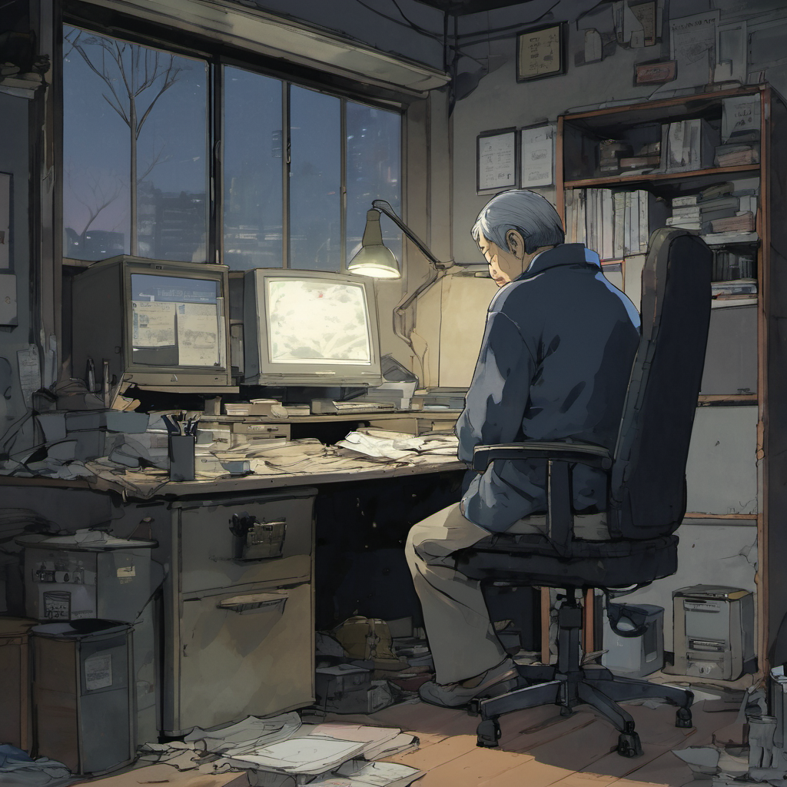
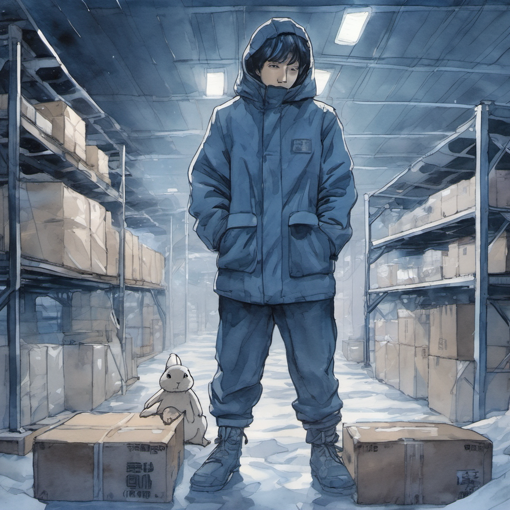
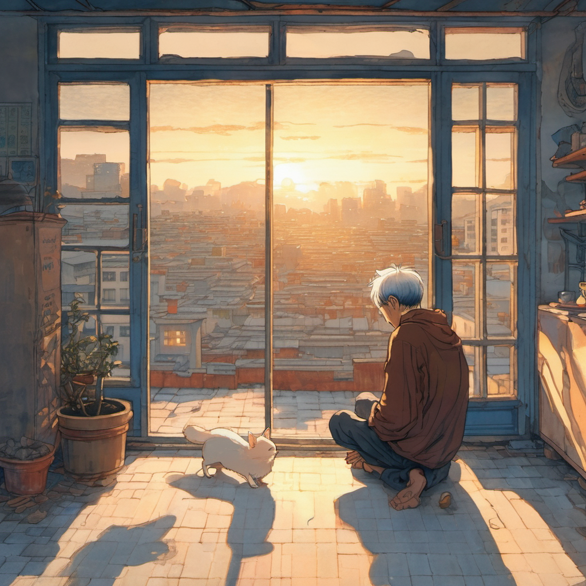
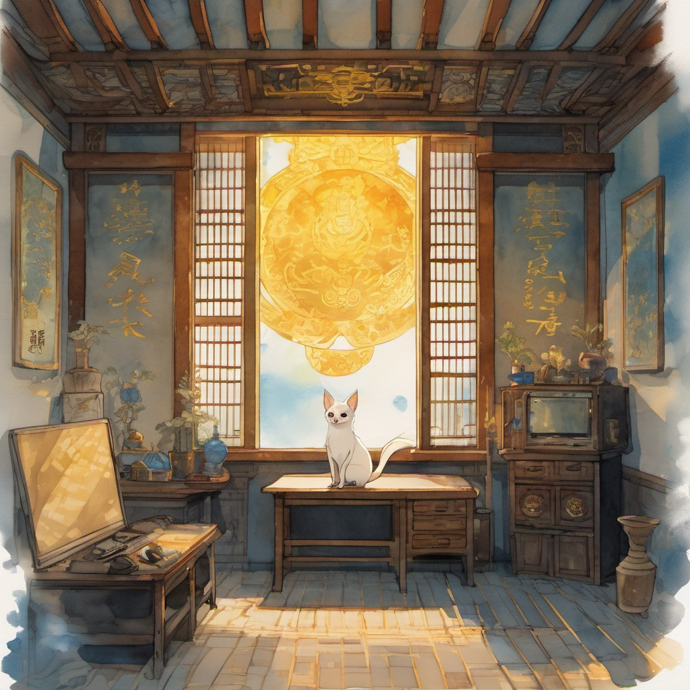
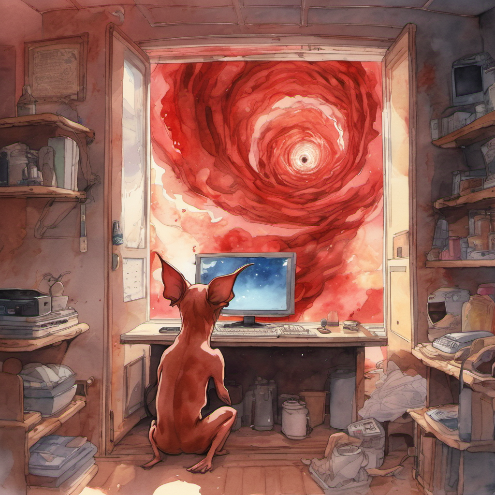
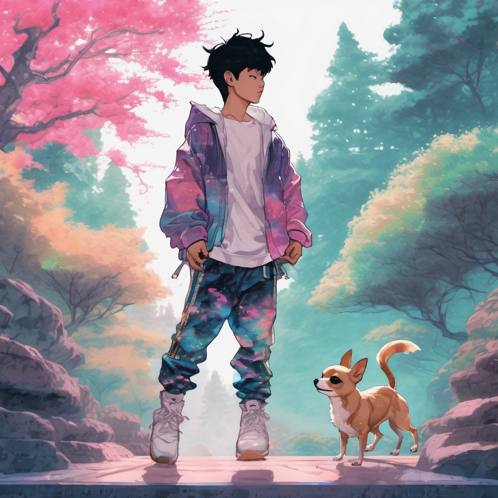
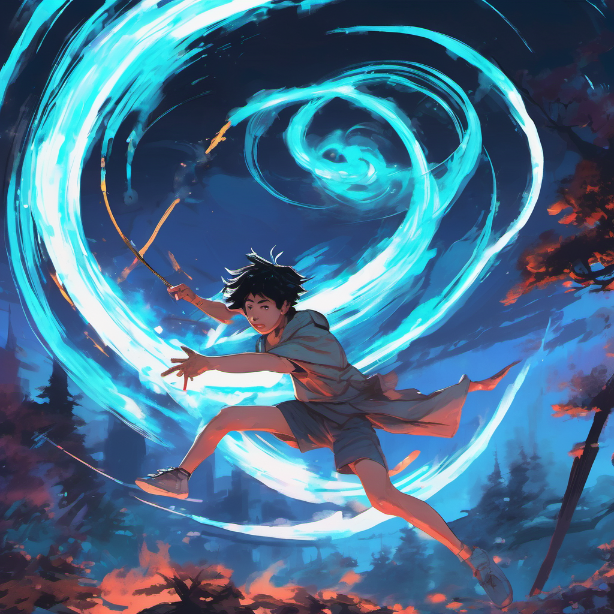

새벽 두 시, 스타리스 사무실

부도 통지서는 A4 한 장이었다.
박정주는 두 번 접어 셔츠 주머니에 찔러 넣었다. 다시 펴 볼 생각은 없었다. 30년이 A4 한 장으로 끝날 줄 알았으면 종이를 좀 더 두껍게 만들 걸 그랬다.
홍대 상수동 4층. 스타리스(주) 아크릴 간판은 5년 전부터 한쪽 귀퉁이가 깨져 있었다.
새벽 두 시. 형광등 하나만 살아 있었다. 정주는 의자에 앉아 자기가 만든 게임을 들여다봤다.
「홍익인간 RPG」. 10년째 켜둔 서버. 동접자 0.
커서가 Y 위에서 떨렸다.
정주의 30년

정주는 56세였다.
20대에 게임 만들겠다고 도쿄 갔다가 빈손으로 돌아왔다. 30대에 1세대 온라인 RPG로 잠깐 떴다가 IMF에 쓸려 사라졌다. 40대에 두 번 더 회사 차렸다가 두 번 다 망했다.
50대에 차린 게 스타리스(주)였다. 「홍익인간 RPG」 하나 보고 차렸다. 단군왕검 신화를 살린 한국형 RPG. 그거 하나였다.
투자자들은 코웃음 쳤다.
정주는 무협도 넣었다. 디아블로 같은 다크 톤도 깔았다. 무속도 부었다. 결국 게임은 7중 융합이 됐고, 7중 융합은 아무도 이해하지 못했다.
10년이 갔다. 통지서가 왔다.
알바 시급 9,860원

지난달부터 정주는 야간 알바를 뛰었다. 인천 쿠팡 41센터.
시급 9,860원. 상하차. 새벽 두 시에 사무실에서 부도 맞고, 세 시 반에 셔틀버스 타고 인천 가서, 1톤짜리 팔레트 옆에서 랩을 감았다.
매니저는 못 알아들었다. 알아들을 리가 없었다. 1993년 4월 1일 듀스 데뷔 무대를 본 사람만 그 말을 알아듣는다.
K-뉴잭스윙. 토끼춤. 엇박자 바운스.
정주가 20대에 클럽에서 5년을 갈아 넣은 그 스텝이, 50대 알바 면접에서 다시 살아날 줄은 몰랐다.
도비, 3.8kg 치와와

집은 홍대입구역 3번 출구 뒤편 옥탑방이었다.
옥탑 철문 앞. 끼이익. 3.8kg짜리 폰 앤 화이트 치와와가 짧은 다리로 미친 듯이 달려 나왔다.
도비였다. 5년 전 유기견 보호소에서 데려온 뚱치 치와와. 닭다리 모양 치석껌 하나에 영혼을 파는 놈.
도비는 못 알아들었다. 꼬리만 흔들었다.
머릿속에 텔레파시가 박혔다.
도비가 정주를 올려다봤다. 3.8kg짜리 치와와 눈에서 황금빛이 일렁였다.
정주의 등줄기로 식은땀이 흘렀다. 1981년 2월. 정주가 열한 살이던 해. 어머니 월자가 작두 위에서 굿하다 피를 토하고 죽었던 달.
단군 73대손

도비의 황금빛이 옥탑방 전체로 번졌다.
3.8kg 치와와가 일어섰다. 짧은 다리 그대로. 짧은 다리 그대로 일어섰는데, 그림자가 천장까지 닿았다.
정주는 엉덩방아를 찧었다. 옥탑방 장판이 차가웠다.
정주는 반박하고 싶었다. 반박이 안 나왔다. 정주가 만든 게임 안에 단군이 있었기 때문이다. 30년 동안 아무도 안 사주는 게임에 단군이 있었기 때문이다. 투자자가 100번 비웃은 그 단군이.
모니터가 빨아들이다

[목표: 창조주 박정주의 1981년 2월 봉인 해제.]
[남은 시간: 03:00]
정주는 통지서를 다시 꺼냈다. 책상 위에 폈다. 그 위에 마우스를 다시 올렸다.
정주가 클릭했다. 모니터가 붉은 빛을 토했다.
블랙홀처럼 소용돌이치는 모니터 안으로 정주의 56세 몸이 통째로 빨려 들어갔다. 도비도 같이. 통지서도 같이.
단군의 숲, 그리고 비트 드롭

등판에 충격이 왔다. 정주는 눈을 떴다. 하늘이 픽셀 구름이었다. 사방은 지지직거리는 글리치 숲. 자기가 직접 텍스처를 깐 「홍익인간 RPG」 1단계 맵, 단군의 숲이었다.
정주는 자기 손을 봤다. 검버섯 피던 손등이 팽팽했다. 작업복 바지 아래로 길쭉한 두 다리가 뻗어 있었다.
비틀거리며 일어섰다. 무릎이 안 시큰거렸다. 30년 만에 처음이었다.
20대의 몸이었다. 1993년 듀스 데뷔 무대를 본 그 20대의 몸이었다.
그때 숲 안개가 걷히며 거대한 다크 고블린 세 마리가 돌진해 왔다. 정주가 30대에 만들었다가 망한 게임의 잔재 몬스터였다.
정주가 발을 굴렀다. 오른발 축. 왼발 뒤로 교차. 엇박자 바운스. 1993년 4월 1일.
K-뉴잭스윙 토끼춤이었다. 그 순간, 게임 안 어디선가 BGM이 깔렸다.
비트가 드롭됐다. K-DANCE LEGEND.
50대 PD가 30년 만에 자기 게임 안에서 자기 안무로 첫 컷을 여는 순간이었다.
휠윈드 랩핑

다크 고블린 세 마리가 뛰어올랐다.
정주가 허리춤에서 푸른 랩봉을 뽑았다. 옥탑방에서 같이 빨려 들어온 공업용 랩봉이었다. 게임 안에선 무신의 무기로 변환됐다.
팔이 헬리콥터처럼 회전했다.
— 50대 PD가 자기 게임 안으로 빨려 들어갔다. 첫 컷은 이렇게 시작됐다.